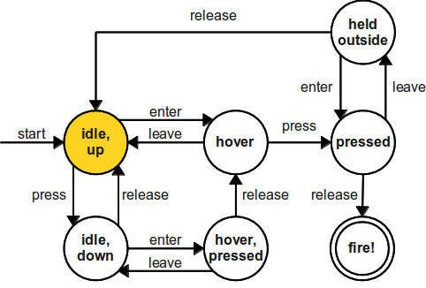

Buttons as Finite Automata
You can think of standard pushbutton controls as finite automata. Each state corresponds to some knowledge about where the mouse is and whether it's up or down.
Here is a standard HTML button along with a visualization of the finite-state machine that controls its operation. Play around with the button and watch how the operations you perform translate into state transitions in the machine!
